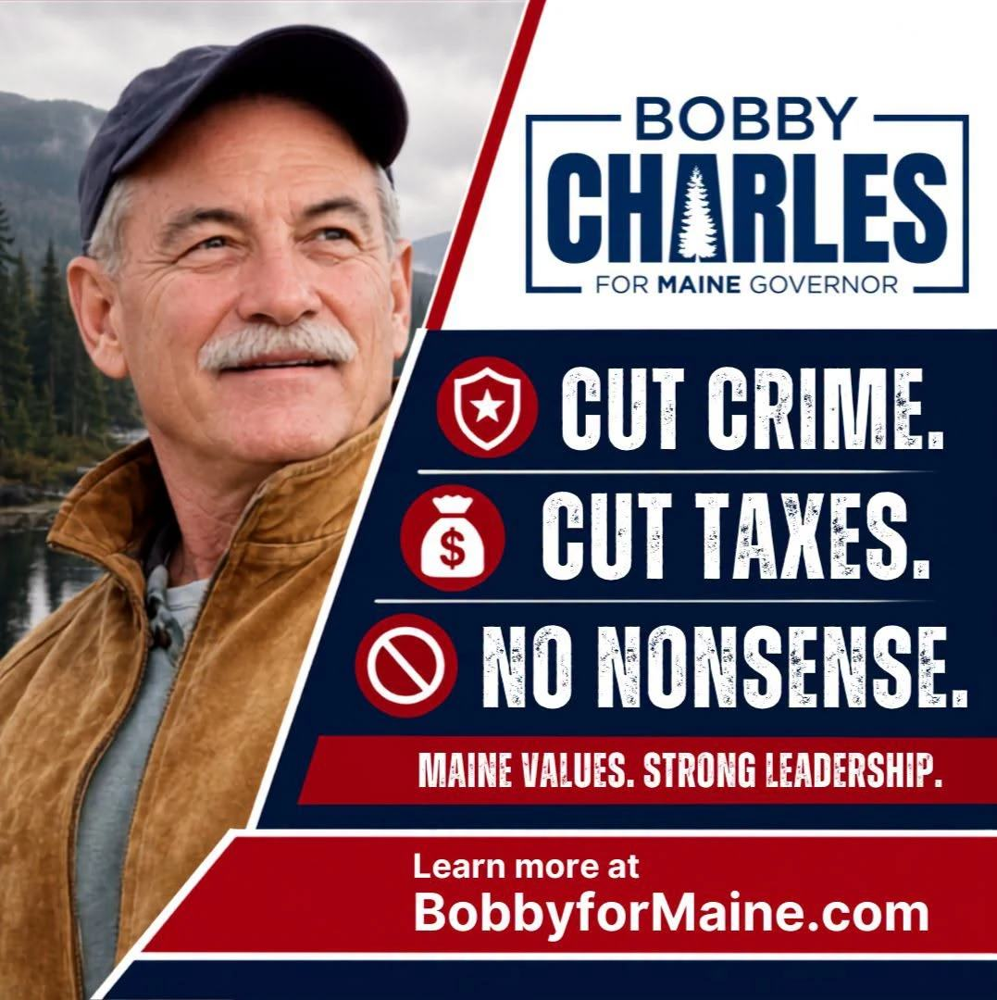

Índice / 02 / Video político
Bobby Charles for Maine Governor

Video, motion y diseño para redes de la campaña de Bobby Charles a gobernador de Maine.
Una línea gráfica de campaña en azul marino, rojo y blanco: frases cortas en tipografía condensada, retratos del candidato y comparaciones directas.
Más de veinte piezas producidas entre video y gráficas: Cut crime, Cut taxes, Not a career politician y The choice is clear.
Ver los videos en Behance ↗- 436K+
- vistas de video
- +20
- piezas producidas
- 20K+
- interacciones en redes

